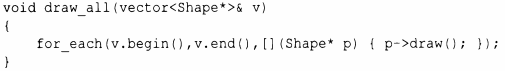

⇐13.8 Адаптация функций 13.8.2 mem_fn()⇒
Рассмотрим классический пример "рисования всех фигур":
Как и все алгоритмы стандартной библиотеки, for_each() вызывает свой аргумент, используя традиционный синтаксис вызова функции f( х) , но draw() класса Shape использует обычную объектно-ориентированную запись x->f().Лямбда-выражение легко становится посредником между двумя записями.